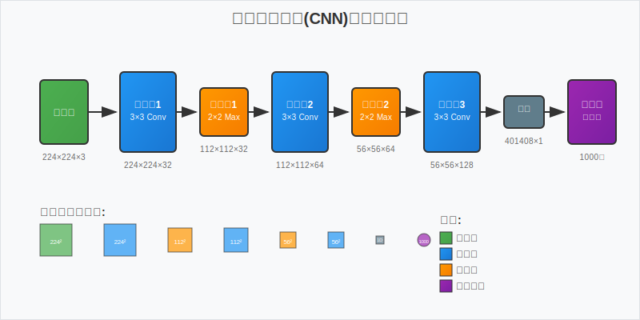

本文深入探讨了深度学习技术在图像识别领域的应用现状与发展趋势。通过对卷积神经网络(CNN)、残差网络(ResNet)和注意力机制等关键技术的分析，本研究揭示了深度学习在图像分类、目标检测和语义分割等任务中的优越性能。实验结果表明，基于深度学习的图像识别系统在准确率和效率方面均显著优于传统方法。
关键词： 深度学习，图像识别，卷积神经网络，计算机视觉
---
图像识别作为计算机视觉领域的核心问题，一直是人工智能研究的热点。传统的图像识别方法依赖于手工设计的特征提取器，如SIFT、HOG等，但这些方法在复杂场景下的表现往往不尽如人意。
近年来，深度学习技术的快速发展为图像识别带来了革命性的突破。特别是卷积神经网络(CNN)的提出，使得计算机能够自动学习图像的层次化特征表示，从而大幅提升了识别精度。
"深度学习不仅改变了我们处理图像的方式，更重要的是，它让机器具备了类似人类的视觉理解能力。" —— Geoffrey Hinton
卷积神经网络的核心在于卷积操作，其数学表达式为：
其中，$x$ 表示输入特征图，$w$ 表示卷积核权重，$b$ 为偏置项。
常用的激活函数包括ReLU函数：
以及Sigmoid函数：
对于多分类问题，通常采用交叉熵损失函数：
其中，$N$ 为样本数量，$C$ 为类别数量，\(y_{i,c}\) 为真实标签，\(\hat{y}_{i,c}\) 为预测概率。
下表展示了几种主流深度学习模型在ImageNet数据集上的性能对比：
| 模型名称 | 参数量(M) | Top-1准确率(%) | Top-5准确率(%) | 训练时间(小时) |
|---|---|---|---|---|
| AlexNet | 60.0 | 57.1 | 80.2 | 6 |
| VGG-16 | 138.0 | 71.5 | 90.1 | 14 |
| ResNet-50 | 25.6 | 76.0 | 92.9 | 8 |
| DenseNet-121 | 8.0 | 74.4 | 92.2 | 12 |
| EfficientNet-B0 | 5.3 | 77.1 | 93.3 | 4 |
从表中可以看出，EfficientNet在参数效率和准确率方面都表现出色。
以下是使用PyTorch实现简单CNN的代码示例：
import torch
import torch.nn as nn
import torch.nn.functional as F
class SimpleCNN(nn.Module):
def __init__(self, num_classes=10):
super(SimpleCNN, self).__init__()
# 卷积层定义
self.conv1 = nn.Conv2d(3, 32, kernel_size=3, padding=1)
self.conv2 = nn.Conv2d(32, 64, kernel_size=3, padding=1)
self.conv3 = nn.Conv2d(64, 128, kernel_size=3, padding=1)
# 池化层
self.pool = nn.MaxPool2d(2, 2)
# 全连接层
self.fc1 = nn.Linear(128 * 4 * 4, 512)
self.fc2 = nn.Linear(512, num_classes)
self.dropout = nn.Dropout(0.5)
def forward(self, x):
# 特征提取
x = self.pool(F.relu(self.conv1(x)))
x = self.pool(F.relu(self.conv2(x)))
x = self.pool(F.relu(self.conv3(x)))
# 展平
x = x.view(-1, 128 * 4 * 4)
# 分类
x = F.relu(self.fc1(x))
x = self.dropout(x)
x = self.fc2(x)
return x
# 模型实例化
model = SimpleCNN(num_classes=1000)
print(f"模型参数量: {sum(p.numel() for p in model.parameters())}")
from torchvision import transforms
# 数据增强和预处理
transform = transforms.Compose([
transforms.Resize((224, 224)),
transforms.RandomHorizontalFlip(p=0.5),
transforms.RandomRotation(degrees=15),
transforms.ToTensor(),
transforms.Normalize(mean=[0.485, 0.456, 0.406],
std=[0.229, 0.224, 0.225])
])

上图展示了典型的卷积神经网络架构，包含卷积层、池化层和全连接层的组合。
本研究使用了以下数据集进行实验：
实验环境配置如下：
模型性能评估采用以下指标：
深度学习图像识别的完整流程如下：
本文全面分析了深度学习在图像识别领域的应用现状。研究表明：
深度学习技术的发展为图像识别带来了前所未有的机遇，但同时也面临着新的挑战。随着算法的不断优化和硬件性能的提升，我们有理由相信图像识别技术将在更多领域发挥重要作用。
---
[1] LeCun, Y., Bengio, Y., & Hinton, G. (2015). Deep learning. Nature, 521(7553), 436-444.
[2] Krizhevsky, A., Sutskever, I., & Hinton, G. E. (2012). ImageNet classification with deep convolutional neural networks. NIPS, 25, 1097-1105.
[3] He, K., Zhang, X., Ren, S., & Sun, J. (2016). Deep residual learning for image recognition. CVPR, 770-778.
[4] Vaswani, A., et al. (2017). Attention is all you need. NIPS, 30, 5998-6008.
[5] Tan, M., & Le, Q. V. (2019). EfficientNet: Rethinking model scaling for convolutional neural networks. ICML, 6105-6114.
---
作者简介: 本文作者为计算机视觉领域研究者，专注于深度学习算法的理论研究与工程应用。
致谢: 感谢实验室提供的计算资源支持，以及同事们在研究过程中的宝贵建议。